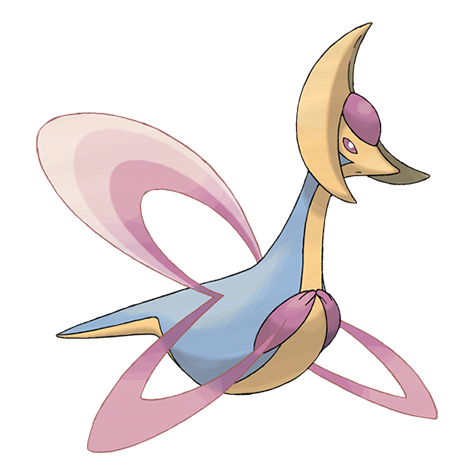
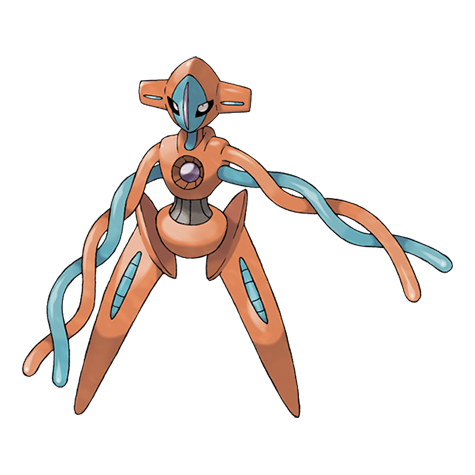

💼 自分
24時間勤務
☀️ 天気
晴れ
最低 4.4℃（観測）／最高 15℃ 降水 0% 東京
🗑️ ゴミ出し
なし
📚 ハルト 塾
なし
📚 ユウト 塾
なし
🧮 リン そろばん
なし
🏠 舞
16時上がり
今日
📚 塾
- ハルト なし
- ユウト なし
塾ページを開いた時刻 6:20
🗑️ ゴミ出し（朝8時まで）
- ゴミ出しなし
📅 自分の予定
- なし
🏫 学校
- なし
💴 お金・期限
- なし
やること
- なし
この先7日
- 11/24(火)明🧮 リン そろばん（送迎できる）
🗑️ びん・缶・プラスチック製容器包装 - 11/25(水)休🗑️ 可燃ごみ
- 11/26(木)勤💴 07:45 ごろ claude-bridge の Gmail 再認証の期限（PC で setup_auth.bat）
🧮 リン そろばん - 11/27(金)勤🧮 リン そろばん
🗑️ 古紙・ペットボトル・不燃ごみ - 11/28(土)明🗑️ 可燃ごみ
- 11/29(日)勤—
- 11/30(月)勤—
勤＝勤務・休＝休み・明＝明け（勤務メモより）
朝のまとめ
- トレード記録：通算 総損益 +6.88円（利益率PF 2.442・勝率 74.4%〈32勝/43取引〉・全44取引）。今回新しく入った取引は0件（新しい決済はなく、2026-11-20建玉の買いを保有中）
- ポケ活：レイド18体（★5伝説クレセリア・ダークライ ほか）・ダイマックス1体（マックスマンデー：ニャスパー初登場）。スマホ用ページも更新した
- CC開発記録（前日）：記録なし（Claude Code 環境の変更はなく、拾えたのはゲームのチケットメモのみで対象外）
- 開発ログ（前日）：完了2件（#118 気づいた本人が名前を呼んで伝える／#119 分かれ道で仲間が道を勧める）＋ #117 固定キャストに専用スプライト6枚を追加
ポケGO（今日）
- ★5伝説レイド：

クレセリア・ ダークライ（6:00〜〈9dbは5:00〉・〜11/24(火)10:00、残りあと1日）。クレセリア（エスパー）→ ゴースト・あく・むし技、ダークライ（あく）→ フェアリー・かくとう・むし技が有効。どちらも色違いあり。明日の朝で終わるので捕り逃しに注意。シャドウ化身
ダークライ（6:00〜〈9dbは5:00〉・〜11/24(火)10:00、残りあと1日）。クレセリア（エスパー）→ ゴースト・あく・むし技、ダークライ（あく）→ フェアリー・かくとう・むし技が有効。どちらも色違いあり。明日の朝で終わるので捕り逃しに注意。シャドウ化身 トルネロス（〜12/1）・
トルネロス（〜12/1）・ メガジュペッタ（〜11/24(火)10:00）も継続
メガジュペッタ（〜11/24(火)10:00）も継続 - マックスマンデー：
 ニャスパー（ダイマックス初登場・色違いの可能性あり）が今日6:00〜21:00。「大きな足跡」は今日11/23(月)20:00で終了。通常のマックスバトル（★1〜★3）はパワースポットで日替わり・場所ごとに登場します（ゲーム内で確認を）
ニャスパー（ダイマックス初登場・色違いの可能性あり）が今日6:00〜21:00。「大きな足跡」は今日11/23(月)20:00で終了。通常のマックスバトル（★1〜★3）はパワースポットで日替わり・場所ごとに登場します（ゲーム内で確認を） - 今日は勤労感謝の日。時間限定イベントはマックスマンデーだけです。この先は 11/24(火) にクレセリア・ダークライ・メガジュペッタが終了＆新イベント「黄昏時の願い」開始（〜11/30(月)20:00）、11/25(水) に

デオキシス各フォルムのレイド＆レイドアワー（18:00〜19:00）とメガメタグロス登場、11/26(木) にスポットライトアワー： オンバットが控えています
オンバットが控えています
書き足す
GitHub にログインした状態で開くと、その場で書けます